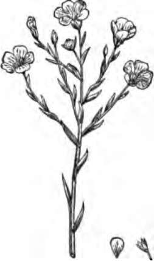
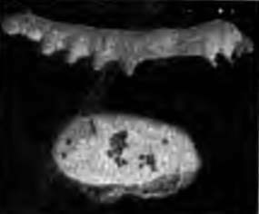
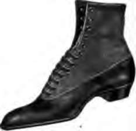
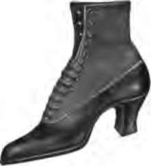

Chapter XIII. Clothing And Colds
Description
This section is from the book "The Human Body And Health", by Alvin Davison. Also available from Amazon: The Human Body and Health.
Chapter XIII. Clothing And Colds
Need Of Clothing
The clothing protects the body from the burning rays of the sun in summer and from cold in winter. It also serves as an ornament. Most people wear too heavy clothing during both summer and winter. In summer too much clothing makes one uncomfortable, and in the winter it may cause colds. It is almost as important to wear the right kind of clothing as to eat the proper kind of food.
Fig. 86. The flax plant.
Kinds Of Clothing
The four chief kinds of material out of which clothing is manufactured are linen, cotton, wool and silk. The flax plant supplies the threads required for the linen manufactured into shirts, collars and cuffs. The cotton plant furnishes the fibers used in making calico, muslin and other cotton goods. Wool sheared from sheep is woven into woolen cloth for wraps, overcoats and cloth suits. The silk worm changes mulberry leaves into fine silk thread used in making ribbons, neckties and silk dresses.
Clothing And Sweat
Sweat is constantly oozing out on the surface of the body and is absorbed by the clothing next to the skin. The under clothing, therefore, soon becomes soiled and needs to be washed at least once or twice weekly. At night it should be hung up in the room so that the air can dry and purify it.
Fig. 87. The silk worm and its cocoon 50,000 of which are required to make a silk dress.
Sweat is formed to cool the body, but it cannot do this unless it soaks through the clothing to the air, so as to carry off the heat. On this account cotton underclothing should be worn in summer. Cotton absorbs sweat much faster than wool and passes it outward toward the air. A newspaper or a rubber coat forms a very warm covering because they do not permit the sweat to be evaporated or the heat to pass outward from the body.
Clothing For Warmth
Woolen cloth is much warmer than cotton or linen, because it is more loosely woven and thus contains air. This prevents the heat from passing off from the body. Woolen underclothing is therefore better for very cold weather, especially for the old and those who exercise but little.
Lately loose-meshed cotton undergarments have been manufactured in such a way as to hold much air and also absorb the sweat. Such clothing may be worn by well persons both summer and winter. They should, however, protect the body from severe cold by outer wraps.
How Clothing Causes Cold
Outer wraps and overcoats should always be removed by persons entering a warm room. If they are not laid off, the body becomes covered with sweat which begins to pass off rapidly as soon as one is out in the wind. The body then feels cold and is likely to become chilled. For the same reason heavy clothing should be taken off when one is exercising.
Some persons wear no overcoat during very cold weather, except when riding. This may usually be done with safety if one accustoms his body gradually to the cold, but to leave off the accustomed outer wrap when exposed to severe cold is likely to make one sick. The change from heavy clothing in winter to light weight garments or low-necked dresses often worn at parties, is a common cause of colds, bronchitis and pneumonia. Except in severe cold weather the throat, however, should not be bundled up in furs or muffler, as it may lead to catarrh.
Other Causes Of Colds
The over heated room is a common cause of colds. The temperature of a room should range from sixty-four to sixty-eight degrees. The heat of the room causes the clothing to become moist with sweat, which when one goes out in the wind, quickly evaporates and chills the body. The activity of certain parts of the body concerned in warding off colds is also weakened so the system is overcome by the least chilling.
Many children catch severe colds by exercising until they are warm and then sitting down to cool off. Except in the very warmest weather, one should always put on an extra wrap immediately after exercising and not wait until he feels cool.
Serious colds are frequently contracted by sitting in damp clothing. Moisture conducts the heat away from the body quickly. When the clothes are wet, one must keep exercising or put on heavy wraps to keep warm until dry garments can be secured.
The Catching Of Colds
Smallpox, diphtheria and scar-let fever are known as catching or contagious diseases. Late discoveries show that even a cold may be contagious.
Nansen and his men were in the arctic regions for more than three years, and were exposed to severe cold weather. On some occasions after getting into their sleeping bags, they had to thaw out their frozen clothing by the heat of their own bodies, before they could go to sleep; and yet not one of the number suffered from a cold until they arrived in Norway. Here civilization permitted certain bacteria to reach them and caused an epidemic of colds.
How To Stop Colds
It is often possible to know when one is beginning to take cold. There is a chilly feeling, a slight heaviness in the head, a roughness in the throat or a watery discharge from the nose. The cold may sometimes be stopped in this stage by taking a hot bath before going to bed and drinking some hot, weak tea or lemonade. One should keep very warm, stay indoors and rest. The food should consist of hot milk, broth, soft boiled eggs and fruit.
Caring For A Cold
After a cold has been in progress two or three days there is no way of curing it at once. By care, however, the period of its duration may be very much shortened. One should be very warmly clad and if possible avoid going out in the wind. If necessary to leave the house in cold weather, the ears and throat must be covered and the entire surface of the body kept warm to keep too much blood from the inner parts.
Fig. 88. A sensible shoe, which does not squeeze the foot.
Fig. 89. An uncomfortable shoe, giving an awkward gait and producing corns.
The sleeping room should not be very cold, but should be well ventilated. Both the feet and head must be kept warm. A cold cannot be cured by medicines but if the system is out of order, a medicine may help to right it and thus aid the body in curing the cold. Never use the much advertised cough medicines. Many contain chloroform or poisons that will harm the body.
Keeping The Feet Dry
One of the common causes of sickness is wet feet. No one should sit still with wet feet. Keep exercising until dry stockings and shoes can be secured. Rainproof shoes or rubber overshoes are necessary during the wet season. Shoes to be made rain proof must be oiled weekly. Overshoes should always be removed upon entering a room as they do not permit the sweat to escape.
Relation Of Clothing To Alcohol
In the bleak winter days the laborer and especially the driver feel cold unless clad from head to foot in proper clothes. These men take a drink of whisky because it makes them feel warm. It really makes their body become colder, because alcohol makes the tiny vessels in the skin enlarge. This act lets more blood come to the surface, where the cold air quickly cools it. The whole body becomes chilled and severe sickness may result. It is therefore dangerous to make whisky take the place of warm clothing.
Practical Questions
1. Name several kinds of clothing. 2. Why should clothing worn next to the skin be washed frequently? 3. Why should cotton underclothing be worn in summer? 4. Why is woolen clothing warmer than cotton? 5. How may a cold be caused by clothing? 6. How are colds often caught? 7. How may colds sometimes be stopped? 8. Why should the skin be kept warm to prevent a cold from becoming worse? 9. How may a cold sometimes be stopped? 10. Explain how a cold should be cared for. 11. Why cannot alcohol take the place of clothing? 12. Why should you not use the advertised cough medicines? 13. Why is it dangerous to sit with wet feet? 14. Why should high-heeled shoes not be worn? 15. When should overshoes be worn?
The fact that damp garments are likely to be the cause of sickness by taking the heat rapidly away from the body may be shown in the following manner: Fill two warm bottles of the same size with hot water. Wrap one in a dry handkerchief and the other in a wet handkerchief. After a half hour, test with the finger and note the one in the wet cloth is cold while the other is still warm.
Continue to: